Abstract
We build a mesh-based volumetric video pipeline for a calibrated 10-camera RGB-D rig. Depth is fused into a sparse truncated signed distance field (8³ voxel bricks, 3.5 mm voxels, 2 cm truncation) with push-pull hole filling and silhouette and free-space carving. Marching cubes extracts the surface; a repair stage keeps thin triangles that a naive cleanup would delete, a guard on the raw field removes the inner shell that carving leaves under the skin, and boundary loops up to 300 edges are closed by ear clipping. The cleaned mesh is decimated, UV-unwrapped and texture-baked, then compressed with the MPEG V-DMC test model and exported to Alembic. Every change was tested live on a watertightness readout in Unity before being kept.
Pipeline
Key numbers
Making the mesh watertight
Each idea was switched on and off in Play mode while a live readout reported open edges, hole loops, non-manifold edges, pieces and genus. Ideas that did not move the numbers were removed.
| Change | Measured effect | |
|---|---|---|
| Keep thin marching-cubes slivers in repair | ~66k slivers per frame had been deleted: open edges −91 %, hole loops −98 %, genus −90 % | kept |
| Smooth the field near the surface | Genus −55 %, pieces −45 %, non-manifold edges to ~0 | kept |
| Inner-shell guard on raw values (max jump 1.9) | Removes the shell ~2 cm under the skin, keeps noisy hair (1.5 on smoothed values ate the hair) | kept |
| Enclosed depth dropouts count as inside | Small extra gain on top of smoothing | kept |
| Ear-clipped hole caps (≤ 300 edges) | Closes every remaining small hole; no fan spikes; no duplicate faces | kept |
| Wider fill reach | No measurable change | removed |
| Unknown voxels as outside | No measurable change | removed |
| Centre-fan hole caps | Long spikes across large unseen holes | replaced |
Very coarse base mesh: decimation target 0.01
The base mesh is the part V-DMC sends as a plain mesh; everything finer travels as wavelet displacements on top of it. With the encoder's decimation target at 0.01, the source frames (~33,000–35,000 faces) become a base mesh of only 2,446 faces (Jenny) and 2,704 faces (Anais). Two takes, two performers, same settings: liftingQP 22,28,28, texture QP 22, 1024×1024 texture, inter coding on; Jenny 10 frames, Anais 20.
Jenny
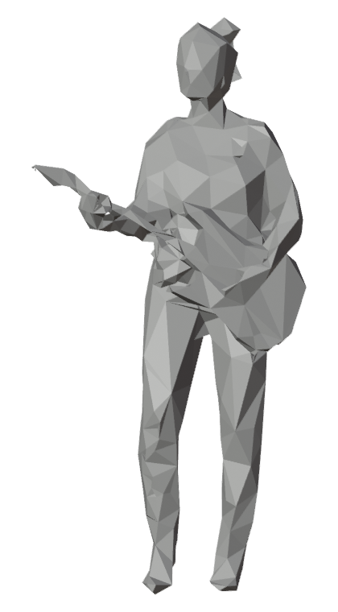
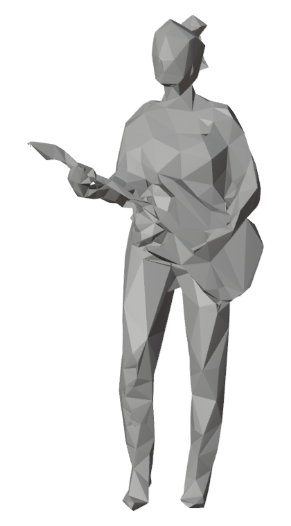
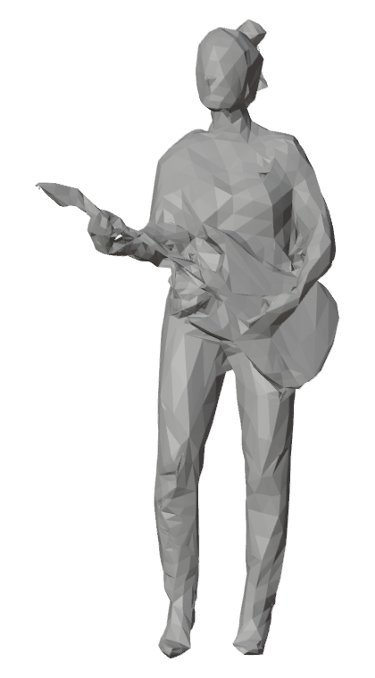
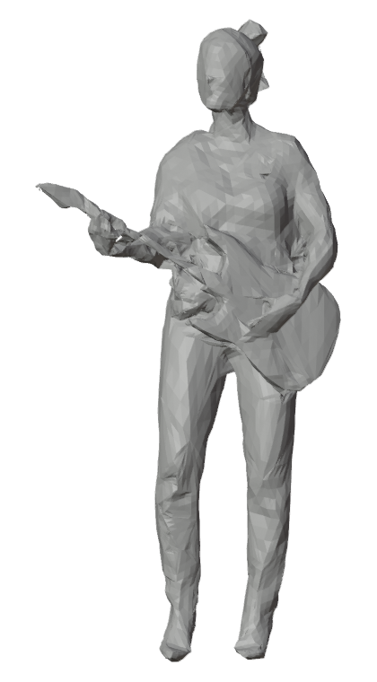
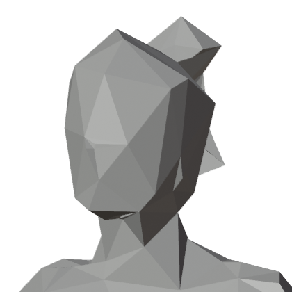
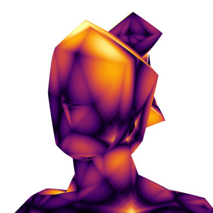
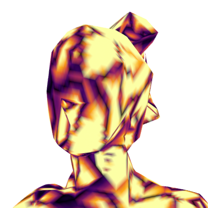
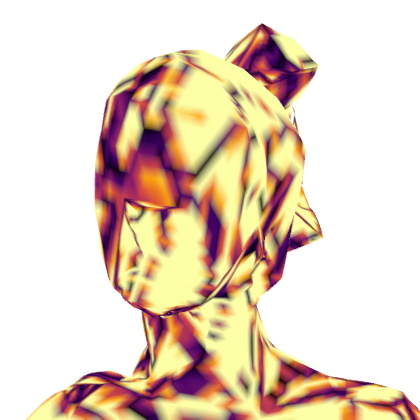
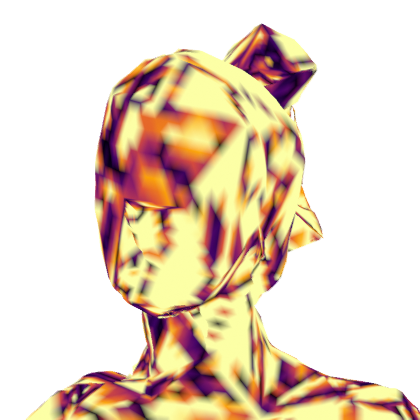
Anais
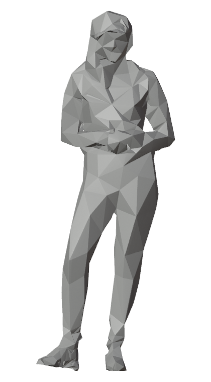
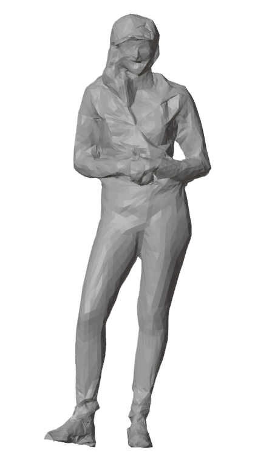
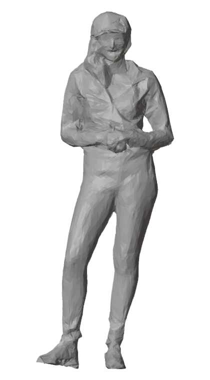
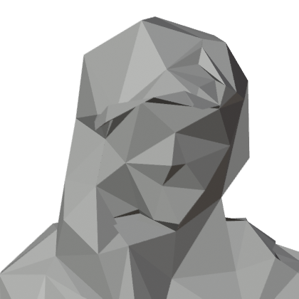
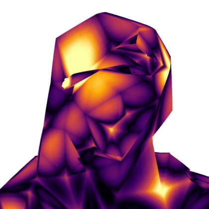
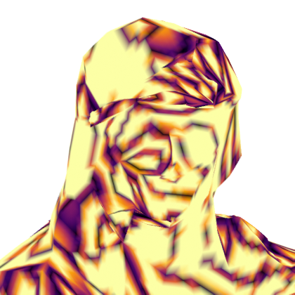
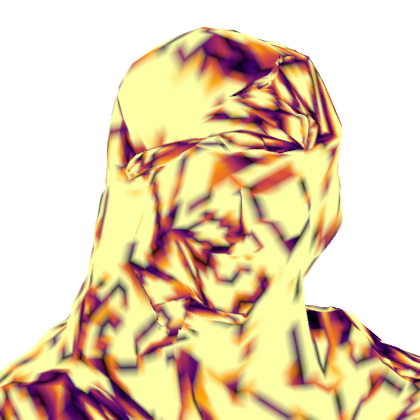
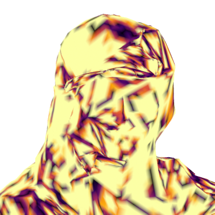
Frame 0, subdivision 3, seen from the front: the base mesh, the subdivided mesh, then each level of displacement added. Bottom rows: the head, coloured by how far each vertex moved from the subdivided mesh (median / p99 over the top 32 cm).
Subdivision levels
| Performer | Subdivisions | Decoded faces / frame | Size / frame | Base / disp. / texture | Geometry error (median / p99) |
|---|---|---|---|---|---|
| Jenny 10 frames | 1 | 9,784 | 51 KB | 11 / 7 / 82 % | 0.35 / 6.3 mm |
| 2 | 39,136 | 62 KB | 13 / 14 / 73 % | 0.30 / 3.7 mm | |
| 3 | 156,544 | 69 KB | 11 / 23 / 65 % | 0.33 / 3.7 mm | |
| Anais 20 frames | 1 | 10,816 | 36 KB | 7 / 11 / 81 % | 0.44 / 7.2 mm |
| 2 | 43,264 | 44 KB | 8 / 23 / 69 % | 0.38 / 5.9 mm | |
| 3 | 173,056 | 58 KB | 12 / 28 / 60 % | 0.35 / 4.3 mm |
- The base mesh costs only 3–8 KB per frame. At subdivision 3 a frame is 69 KB for Jenny and 58 KB for Anais (~17 and ~14 Mbit/s at 30 fps); the texture is 60–80 % of every frame.
- Each subdivision level halves the outliers: the median error stays at 0.3–0.4 mm throughout, but the p99 falls from 6–7 mm at one level to 3.7–4.3 mm at three. A 2,500-face base cannot follow fingers, hair or folds; the displacements have to reach them.
- Most of the shape arrives in the first two levels of displacement (LoD 0–1 in the head rows); LoD 2 and 3 add little geometry but most of the decoded faces.
- Inter coding only partly works: Anais's base mesh is predicted from the previous frame at every level, Jenny's only at subdivision 1 — at 2 and 3 it is coded intra in every frame.
- Encoding takes 43–69 s per frame (mostly texture compression and pre-processing); decoding a 20-frame sequence takes a few seconds.
Error: distance from every decoded vertex to the source frame's surface, all frames, in millimetres.
Limitations
- Large areas no camera sees (behind a held instrument, between the legs) stay open; capping them would be a guess.
- Some inner shell remains in the full-resolution mesh (2.2 % double-layer faces), mostly removed by decimation (0.4 %).
- Export runs offline at about 33 s per frame; the live mesh is for preview.
- Thresholds are tuned for this rig and need re-tuning for other rigs or sensors.
Next
- Raycast preview of the TSDF in Unity, to tell volume problems from meshing problems.
- Surface Nets as an alternative to marching cubes: fewer slivers, fewer and better-shaped triangles.
- A slightly finer base mesh: at decimation target 0.01 the base costs only 3–8 KB per frame but the p99 error is 3.7–4.3 mm; a somewhat larger base should cut the outliers for a few KB more.
- Get the base mesh coded inter at every subdivision level (Jenny's is still intra at levels 2 and 3).
BibTeX
@misc{rehman2026watertightmeshcapture,
title = {Watertight Volumetric Mesh Capture with MPEG V-DMC Compression},
author = {Rehman, Abdul},
year = {2026},
note = {French Touch Factory / ITHACA, project page}
}